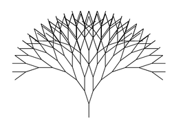
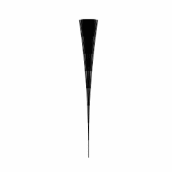
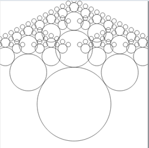
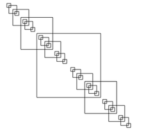
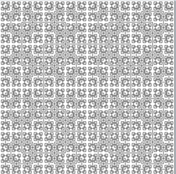
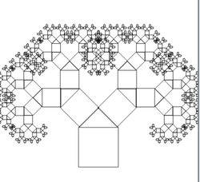
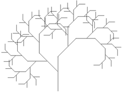

Tema 6: Funciones recursivas
Índice
1. Recursión numérica
1.1. Recursión numérica: El factorial
La función factorial:
factorial :: Integer -> Integer factorial 0 = 1 factorial n = n * factorial (n-1)
Cálculo:
factorial 3 = 3 * (factorial 2) = 3 * (2 * (factorial 1)) = 3 * (2 * (1 * (factorial 0))) = 3 * (2 * (1 * 1)) = 3 * (2 * 1) = 3 * 2 = 6
1.2. Recursión numérica: El producto
Definición recursiva del producto:
por :: Int -> Int -> Int m `por` 0 = 0 m `por` n = m + (m `por` (n-1))
Cálculo:
3 `por` 2 = 3 + (3 `por` 1) = 3 + (3 + (3 `por` 0)) = 3 + (3 + 0) = 3 + 3 = 6
2. Recursión sobre lista
2.1. Recursión sobre listas: La función product
Producto de una lista de números:
product :: Num a => [a] -> a product [] = 1 product (n:ns) = n * product ns
Cálculo:
product [7,5,2] = 7 * (product [5,2]) = 7 * (5 * (product [2])) = 7 * (5 * (2 * (product []))) = 7 * (5 * (2 * 1)) = 7 * (5 * 2) = 7 * 10 = 70
2.2. Recursión sobre listas: La función length
Longitud de una lista:
length :: [a] -> Int length [] = 0 length (_:xs) = 1 + length xs
Cálculo:
length [2,3,5] = 1 + (length [3,5]) = 1 + (1 + (length [5])) = 1 + (1 + (1 + (length []))) = 1 + (1 + (1 + 0)) = 1 + (1 + 1) = 1 + 2 = 3
2.3. Recursión sobre listas: La función reverse
Inversa de una lista:
reverse :: [a] -> [a] reverse [] = [] reverse (x:xs) = reverse xs ++ [x]
Cálculo:
reverse [2,5,3] = (reverse [5,3]) ++ [2] = ((reverse [3]) ++ [5]) ++ [2] = (((reverse []) ++ [3]) ++ [5]) ++ [2] = (([] ++ [3]) ++ [5]) ++ [2] = ([3] ++ [5]) ++ [2] = [3,5] ++ [2] = [3,5,2]
2.4. Recursión sobre listas: ++
Concatenación de listas:
(++) :: [a] -> [a] -> [a] [] ++ ys = ys (x:xs) ++ ys = x : (xs ++ ys)
Cálculo:
[1,3,5] ++ [2,4] = 1:([3,5] ++ [2,4]) = 1:(3:([5] ++ [2,4])) = 1:(3:(5:([] ++ [2,4]))) = 1:(3:(5:[2,4])) = 1:(3:[5,2,4]) = 1:[3,5,2,4] = [1,3,5,2,4]
2.5. Recursión sobre listas: Inserción ordenada
(inserta e xs)inserta el elementoeen la listaxsdelante del primer elemento dexsmayor o igual quee. Por ejemplo,inserta 5 [2,4,7,3,6,8,10] == [2,4,5,7,3,6,8,10]
Su definición es
inserta :: Ord a => a -> [a] -> [a] inserta e [] = [e] inserta e (x:xs) | e <= x = e : (x:xs) | otherwise = x : inserta e xs
Cálculo:
inserta 4 [1,3,5,7] = 1:(inserta 4 [3,5,7]) = 1:(3:(inserta 4 [5,7])) = 1:(3:(4:(5:[7]))) = 1:(3:(4:[5,7])) = [1,3,4,5,7]
2.6. Recursión sobre listas: Ordenación por inserción
(ordena_por_insercion xs)es la listaxsordenada mediante inserción, Por ejemplo,ordena_por_insercion [2,4,3,6,3] == [2,3,3,4,6]
Su definición es
ordena_por_insercion :: Ord a => [a] -> [a] ordena_por_insercion [] = [] ordena_por_insercion (x:xs) = inserta x (ordena_por_insercion xs)
Cálculo:
ordena_por_insercion [7,9,6] = = inserta 7 (inserta 9 (inserta 6 [])) = inserta 7 (inserta 9 [6]) = inserta 7 [6,9] = [6,7,9]
3. Recursión sobre varios argumentos
3.1. Recursión sobre varios argumentos: La función zip
Emparejamiento de elementos (la función
zip): Su definición eszip :: [a] -> [b] -> [(a, b)] zip [] _ = [] zip _ [] = [] zip (x:xs) (y:ys) = (x,y) : zip xs ys
Cálculo:
zip [1,3,5] [2,4,6,8] = (1,2) : (zip [3,5] [4,6,8]) = (1,2) : ((3,4) : (zip [5] [6,8])) = (1,2) : ((3,4) : ((5,6) : (zip [] [8]))) = (1,2) : ((3,4) : ((5,6) : [])) = [(1,2),(3,4),(5,6)]
3.2. Recursión sobre varios argumentos: La función drop
Eliminación de elementos iniciales:
drop :: Int -> [a] -> [a] drop 0 xs = xs drop n [] = [] drop n (x:xs) = drop (n-1) xs
Cálculo:
drop 2 [5,7,9,4] = drop 1 [7,9,4] = drop 0 [9,4] = [9,4] drop 5 [1,4] = drop 4 [4] = drop 1 [] = []
4. Recursión múltiple
4.1. Recursión múltiple: La función de Fibonacci
- La sucesión de Fibonacci es: 0,1,1,2,3,5,8,13,21,…. Sus dos primeros términos son 0 y 1 y los restantes se obtienen sumando los dos anteriores.
(fibonacci n)es eln-ésimo término de la sucesión de Fibonacci. Por ejemplo,fibonacci 8 == 21
Su definición es
fibonacci :: Int -> Int fibonacci 0 = 0 fibonacci 1 = 1 fibonacci n = fibonacci (n-2) + fibonacci (n-1)
4.2. Recursión múltiple: Ordenación rápida
Algoritmo de ordenación rápida:
ordena :: (Ord a) => [a] -> [a] ordena [] = [] ordena (x:xs) = (ordena menores) ++ [x] ++ (ordena mayores) where menores = [a | a <- xs, a <= x] mayores = [b | b <- xs, b > x]
5. Recursión mutua
5.1. Recursión mutua: Par e impar
Par e impar por recursión mutua:
par :: Int -> Bool par 0 = True par n = impar (n-1) impar :: Int -> Bool impar 0 = False impar n = par (n-1)
Cálculo:
impar 3 = par 2 = impar 1 = par 0 = True par 3 = impar 2 = par 1 = impar 0 = False
5.2. Recursión mutua: Posiciones pares e impares
(pares xs)son los elementos dexsque ocupan posiciones pares.(impares xs)son los elementos dexsque ocupan posiciones impares.pares :: [a] -> [a] pares [] = [] pares (x:xs) = x : impares xs impares :: [a] -> [a] impares [] = [] impares (_:xs) = pares xs
Cálculo:
pares [1,3,5,7] = 1:(impares [3,5,7]) = 1:(pares [5,7]) = 1:(5:(impares [7])) = 1:(5:[]) = [1,5]
6. Heurísticas para las definiciones recursivas
6.1. Aplicación del método: La función product
Paso 1: Definir el tipo:
product :: [Int] -> Int
Paso 2: Enumerar los casos:
product :: [Int] -> Int product [] = product (n:ns) =
Paso 3: Definir los casos simples:
product :: [Int] -> Int product [] = 1 product (n:ns) =
Paso 4: Definir los otros casos:
product :: [Int] -> Int product [] = 1 product (n:ns) = n * product ns
Paso 5: Generalizar y simplificar:
product :: Num a => [a] -> a product [] = 1 product (n:ns) = n * product ns
6.2. Aplicación del método: La función drop
Paso 1: Definir el tipo:
drop :: Int -> [a] -> [a]
Paso 2: Enumerar los casos:
drop :: Int -> [a] -> [a] drop 0 [] = drop 0 (x:xs) = drop n [] = drop n (x:xs) =
Paso 3: Definir los casos simples:
drop :: Int -> [a] -> [a] drop 0 [] = [] drop 0 (x:xs) = x:xs drop n [] = [] drop n (x:xs) =
Paso 4: Definir los otros casos:
drop :: Int -> [a] -> [a] drop 0 [] = [] drop 0 (x:xs) = x:xs drop n [] = [] drop n (x:xs) = drop n xs
Paso 5: Generalizar y simplificar:
drop :: Integral b => b -> [a] -> [a] drop 0 xs = xs drop n [] = [] drop n (_:xs) = drop n xs
6.3. Aplicación del método: La función init
initelimina el último elemento de una lista no vacía.Paso 1: Definir el tipo:
init :: [a] -> [a]
Paso 2: Enumerar los casos:
init :: [a] -> [a] init (x:xs) =
Paso 3: Definir los casos simples:
init :: [a] -> [a] init (x:xs) | null xs = [] | otherwise =
Paso 4: Definir los otros casos:
init :: [a] -> [a] init (x:xs) | null xs = [] | otherwise = x : init xs
Paso 5: Generalizar y simplificar:
init :: [a] -> [a] init [_] = [] init (x:xs) = x : init xs
7. Recursión y dibujos
- En esta sección se amplían los programas de dibujo con CodeWorld/Haskell]estudiados en el tema 0 y en el tema 5.
7.1. Fractal del árbol
- Ejemplo: Escribir un programa para pintar el siguiente dibujo
 Programa:
import CodeWorld main :: IO () main = drawingOf (arbol 8) tronco :: Picture tronco = polyline [(0,0),(0,1)] arbol :: Integer -> Picture arbol 0 = tronco arbol n = tronco & rama1 & rama2 where rama = arbol (n-1) rama1 = translated 0 1 (rotated ( pi/10) rama) rama2 = translated 0 1 (rotated (-pi/10) rama)
- Evaluación en CodeWorld/Haskell Fractal del árbol
- Ejemplo: Escribir un programa para pintar la siguiente animación
 Programa:
import CodeWorld main :: IO () main = animationOf (arbol 8 . sin) tronco :: Picture tronco = polyline [(0,0),(0,1)] arbol :: Integer -> Double -> Picture arbol 0 _ = tronco arbol n f = tronco & rama1 & rama2 where rama = arbol (n-1) f rama1 = translated 0 1 (rotated ( f*pi/10) rama) rama2 = translated 0 1 (rotated (-f*pi/10) rama)
- Evaluación en CodeWorld/Haskell Fractal del árbol animado.
7.2. Fractal de círculos
- Ejemplo: Escribir un programa para pintar el siguiente dibujo
 Programa:
import CodeWorld main :: IO () main = drawingOf (arbol 4) tronco :: Picture tronco = translated 0 (-4) (circle 5) arbol :: Integer -> Picture arbol 0 = tronco arbol n = tronco & rama1 & rama2 & rama3 where rama = scaled (1/2) (1/2) (arbol (n-1)) rama1 = translated (-6.2) 2.3 rama rama2 = translated 0 5.5 rama rama3 = translated 6.2 2.3 rama
- Evaluación en CodeWorld/Haskell Fractal de círculos
7.3. Fractal de cuadrados
- Ejemplo: Escribir un programa para pintar el siguiente dibujo
 Programa:
import CodeWorld main :: IO () main = drawingOf (arbol 4) tronco :: Picture tronco = rectangle 6 6 arbol :: Integer -> Picture arbol 0 = tronco arbol n = tronco & rama1 & rama2 where rama = scaled (1/2) (1/2) (arbol (n-1)) rama1 = translated (-3) 3 rama rama2 = translated 3 (-3) rama
- Evaluación en CodeWorld/Haskell Fractal de cuadrados
7.4. Fractal de cuadrados con 4 ramas
- Ejemplo: Escribir un programa para pintar el siguiente dibujo
 Programa:
import CodeWorld main :: IO () main = drawingOf (arbol 5) tronco :: Picture tronco = rectangle 10 10 arbol :: Integer -> Picture arbol 0 = tronco arbol n = tronco & rama1 & rama2 & rama3 & rama4 where rama = scaled (1/2) (1/2) (arbol (n-1)) rama1 = translated (-5) 5 rama rama2 = translated 5 (-5) rama rama3 = translated (-5) (-5) rama rama4 = translated 5 5 rama
- Evaluación en CodeWorld/Haskell Fractal de cuadrados con 4 ramas
7.5. Fractal del sobre
- Ejemplo: Escribir un programa para pintar el siguiente dibujo
 Programa:
import CodeWorld main :: IO () main = drawingOf (arbol 8) tronco :: Picture tronco = translated 0 (-5) (rectangle 4 4 & polyline [(-2, 2), (0, 4), (2, 2)]) arbol :: Integer -> Picture arbol 0 = tronco arbol n = tronco & rama1 & rama2 where rama = scaled r r (arbol (n-1)) rama1 = translated 4.3 1.4 (rotated (-pi/4) rama) rama2 = translated (-4.3) 1.4 (rotated ( pi/4) rama) r = 0.685
- Evaluación en CodeWorld/Haskell Fractal del sobre
7.6. Fractal asimétrico
- Ejemplo: Escribir un programa para pintar el siguiente dibujo
 Programa:
import CodeWorld main :: IO () main = drawingOf (arbol 6) tronco :: Picture tronco = polyline [(0,-5),(0,0)] arbol :: Integer -> Picture arbol 0 = tronco arbol n = tronco & rama1 & rama2 where rama = scaled (3/4) (3/4) (arbol (n-1)) rama1 = translated (-2.7) 0.5 (rotated ( pi/4) rama) rama2 = translated 2.6 2.6 (rotated (-pi/4) rama)
- Evaluación en CodeWorld/Haskell Fractal asimétrico
8. Material complementario
El código del tema se encuentra en este enlace.
Este tema también se encuentra en los siguientes formatos:
- Como transparencias en PDF.
- Como libro interactivo en IHaskell sobre Jupyter.
- Como vídeos de clase: vídeo 1 y vídeo 2.
9. Bibliografía
- R. Bird. Introducción a la programación funcional con Haskell. Prentice Hall, 2000.
- Cap. 3: Números.
- Cap. 4: Listas.
- G. Hutton. Programming in Haskell. Cambridge University Press, 2007.
- Cap. 6: Recursive functions.
- B. O'Sullivan, D. Stewart y J. Goerzen. Real World Haskell. O'Reilly, 2008.
- Cap. 2: Types and Functions.
- B.C. Ruiz, F. Gutiérrez, P. Guerrero y J.E. Gallardo. Razonando con
Haskell. Thompson, 2004.
- Cap. 2: Introducción a Haskell.
- Cap. 6: Programación con listas.
- S. Thompson. Haskell: The Craft of Functional Programming, Second
Edition. Addison-Wesley, 1999.
- Cap. 4: Designing and writing programs.
- CodeWorld @ Parkside.